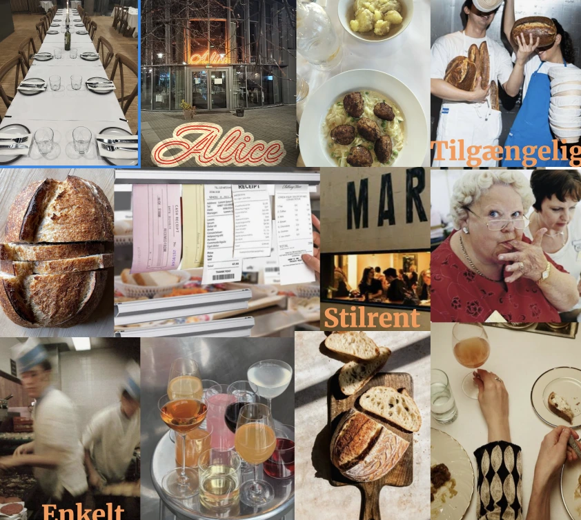
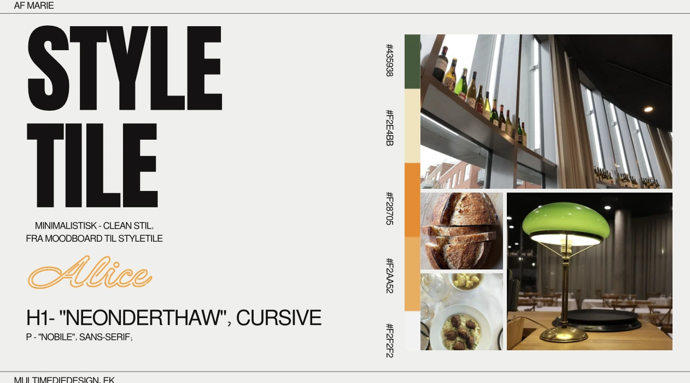
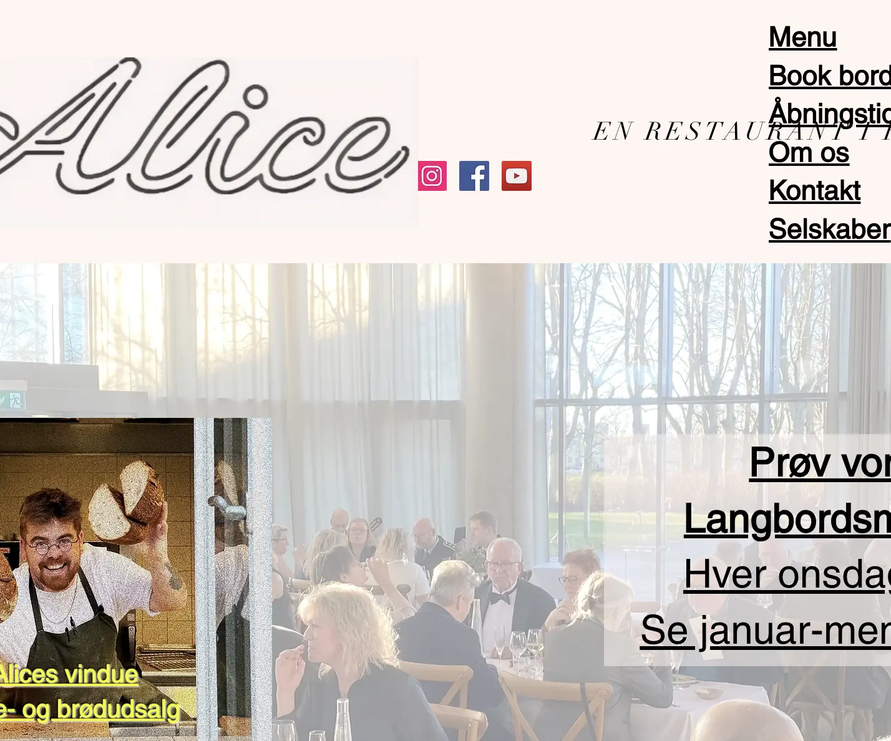
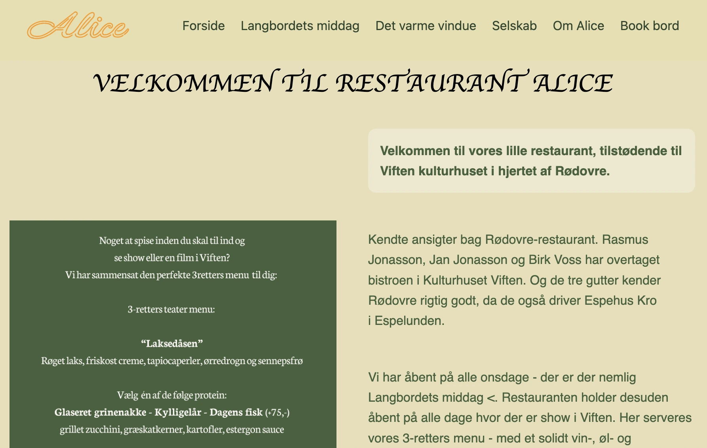

GRUNDLÆGGENDE INDHOLD – Redesign af Alice
I dette projekt har jeg arbejdet med grundlæggende indhold, her valgte min gruppe og jeg at tage udgangspunkt i redesign af Restaurant Alice’ website. Målet var at gøre siden mere moderne, overskuelig og brugervenlig, samtidig med at bevare brandets identitet og farvepalet.
Moodboard

Moodboardet blev brugt til at samle inspiration, farver og typografi, som skulle guide redesign-processen. Jeg ønskede et lyst, indbydende og professionelt udtryk.
Styletile

Styletilen fastlagde de visuelle elementer såsom farver, skrifttyper, knapper og ikoner, så det samlede redesign blev konsistent på tværs af siden.
Before / After
Gamle website

Redesign

Sammenligningen viser hvordan redesign har forbedret overskuelighed, typografi og visuel stil.
Se sitet
Klik på linket for at se det færdige redesign live:
Besøg Alice RedesignProces og læring
Gennem projektet lærte jeg vigtigheden af at arbejde iterativt med feedback, både fra brugere og vejledere. Jeg oplevede hvordan farver, typografi og struktur påvirker brugeroplevelsen, og hvordan et redesign kan skabe bedre flow og visuel konsistens. Jeg lærte også hvordan det er at arbejde i grupper, hvor kommunikation og samarbejde er nøglen til et succesfuldt produkt.